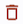
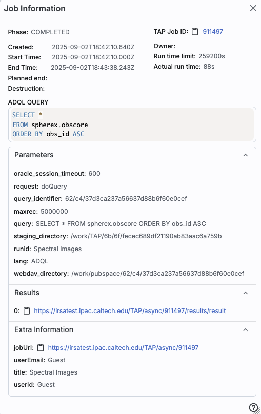

Firefly: Job Monitor
Contents of page/chapter:
+Introduction
+Sending Jobs to the Job Monitor
+The Job Monitor Tab
+Sending Email
+Job Information
The Job Monitor exists as a place to manage a variety of processes
that might otherwise obstruct your work in the tool -- packaging data,
pulling large catalogs, conducting large data product searches, or, in
some tools, more sophisticated tools like spectrophotometry
calculations. You can place jobs in progress into the job monitor; you
can load results from jobs back into the tool, or download data (or
scripts for data) from the tool, and you can set it up to email you
when the job(s) are done.
Some jobs are sent to the Job Monitor indepdently of anything you do,
but most of the time, you control whether or not you send jobs to the
Job Monitor.
If you request a large catalog or a large data download, large enough
that it takes more than a few seconds to fulfill your request, you
have the option of sending the request to the background -- click on
"send to background":
Clicking on the "Job Monitor" button here has the same effect as if
you click on the "Job Monitor" blue tab at the top of the screen, and
"Cancel" cancels the request.
To explore the Job Monitor, click on the Job Monitor tab at the top of
the screen:
Here is a reasonably well-populated job monitor list:
At the top, it summarizes (in this case) that there are 7 jobs, one of
which is currently active, and none of which have failed. This
implementation doesn't have the email entry
available.
Below that, there is a table, like any other
table in this tool (with all the associated sorting and filtering
cabilities), that lists all of the jobs that have been sent to the Job
Monitor in this session, along with basic information like what
catalog they queried, and what time (in Universal Time) they were
launched. Most of them in this screenshot are catalog searches (type =
search) but two are data packaging (type = package), one of which is
still executing.
On the far right is a collection of icons. The different icons do
different things:
|
| Usually this icon is animated -- the job is executing. |
|
| Display the results of this job in the tool -- usually this
appears in reference to a catalog search, and the icon matches that in
the "Results" tab, which is where the results will appear after you
click on this icon. |
|
| Notification toggled on -- if an email is provided in the top
of the Job Monitor, then email will be sent upon completion (see below). |
|
| Notification toggled off -- this is the default state. |
|
| Download the results of this job to your disk -- this could
be a zip file, a data file (e.g., a FITS file), or a download script,
depending on what data you are accessing. |
|
| Get more information about this job (see below). |
|
| Stop this job. |
| 
| Discard this job from this list. |
Jobs accumulate in the Job Monitor over a given session, which could
include more than one browser window accessing the same archive,
because it relies on cookies being set. Jobs that are older than 2
weeks will not appear.
⚠ Tips and Troubleshooting
- You control where the file is saved on your disk
through your browser; your browser may be configured to store all
downloads in a particular location on your disk. Try looking in a
"Downloads" directory, or for "recently modified files."
For large jobs (particularly data packaging jobs), in some tools, you
have an option to have the system email you when it is done and ready
for downloading.
In order to make this happen, the tool has to have this option
enabled, and then you have to do two things.
- Enter a valid email at the top of the Job Monitor page. (It should
go without saying that if you don't enter a correct email, it can't do
anything to fix that.)
- Tell it that you want it to send you an email for the specific
job in question. Click on the blue bell at any time before the job
completes to toggle an email being sent to you upon completion.
| This means
don't send email |
| This means
do send email |
The reason it defaults to "don't send email" is so that you avoid
spamming yourself - if you make a lot of catalog requests (like 13 in
the screenshot above), you most likely don't want it to send you a lot
of emails in rapid succession.
If you ask it to email you for a download
packaging request, it is fairly likely that you will be emailed
links to obtain a curl or wget script, or a list of URLs that you can
feed to your own code to get your data. See the download chapter for more details.
⚠ Tips and Troubleshooting
- By default, it will NOT send you email when it is complete, even
if you have an email filled out. (This is to avoid accidentally
spamming yourself!) Click on the blue bell at any time before the job
completes to toggle an email being sent to you upon completion.
The information you get when you click on the i-in-a-circle looks
something like this:

It specifies things about the query, like when it was submitted and
how long it took, but also the job ID (useful for helpdesk tickets),
and the parameters you used (which you can copy using the ellipsis,
just like for table cells), and also
what information you provided -- username if you logged in, email if you
provided it, title if you provided it, and the URL that links directly
to the job (also useful for helpdesk tickets; to copy it, click on the
tiny clipboard icon next to the "jobURL" text).